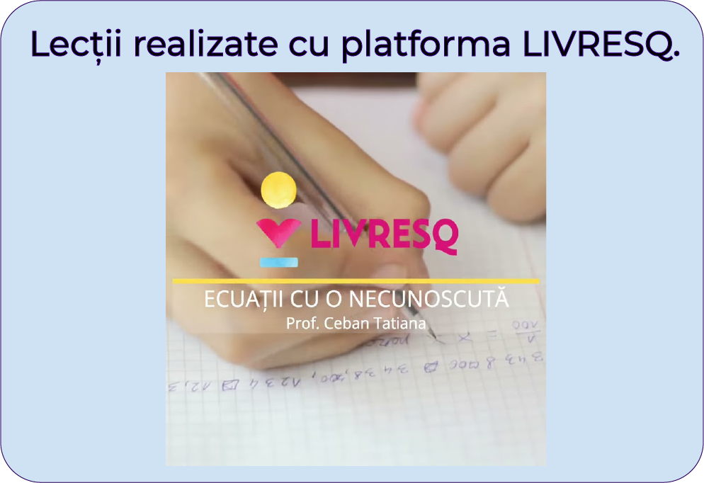
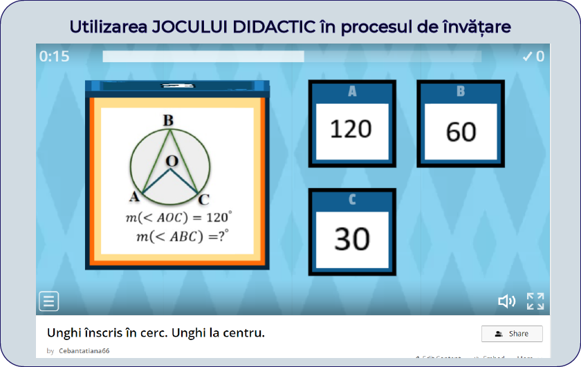

Despre
Performanța vine împreună cu noi...
În ultimii ani am implementat metode și tehnici moderne, abordări și exerciții proprii, care ajută orice elev să înțeleagă matematica. Matematica nu este grea, posibil nu ai avut pe cineva care să ți-o explice pe înțelesul tău.
Urmărește această pagină, materialele înteractive te v-a ajuta să-ți înlături lacunele care le ai.
Trăim într-o eră mult prea tehnologizată și este evident că instruirea asistată de calculator
câștigă tot mai mult teren. Atunci când un profesor este creativ, elevul este tot mai mult motivat
să studieze și MATEMATICA poate deveni o adevărată poveste. Jocurile, materialele audio-video,
graficele sau diagramele, rebusurile fac învățarea mult mai plăcută, incită mințile tinere și îi
învață pe
elevi să gândească creativ și să înfrunte provocările. Sunt materiale menite să capteze interesul
elevilor pasionați de matematică, și nu numai, din generația aceasta.
Este o certitudine că instruirea asistată de calculator tinde să devină un instrument de utilitate
generală. Profesionalismul și devotamentul profesorului în a împărtăși cu elevii
cunoștințele și experiența acumulată,vor rămâne dintotdeauna cele mai importante condiții ce asigură
succesul elevilor.
Activități interactive întîlnite în acest site.
- Lecții filmate, care ne ajută la înțelegerea temelor noi.
- Activități realizate cu aplicația GEOGEBRA.
- Lecții interactive realizate cu platforma LIVRESQ.
- Activități interactive-jocuri didactice realizate cu aplicația WORDWALL, LearningApps.
Activități realizate cu GEOGEBRA
Softul educațional GEOGEBRA este un instrument didactic care eficientizează considerabil instruirea matematică a elevilor de gimnaziu, dar și de liceu. Activitățile realizate cu GEOGEBRA ne ajută să ne dezvoltăm imaginația spațială, ne ajută să înțelegem geometria în spațiu. Impactul pe termen lung al învățării geometriei asistată de calculator, constă în stimularea motivării elevilor pentru studiu individual și progresul școlar, dar și creșterea încrederii în propria capacitate de a face față testelor ,concursurilor, examenelor și a vieții în general.
Lecții filmate
Lecțiile filmate ne ajută să înțelegem materia nouă. La lecții uneori elevii nu înțeleg anumite secvențe din lecție, se sfiesc să întrebe. Lecțiile filmate le dă posibilitate elevilor să mai asculte acea secvență.
Lecții LIVRESQ
Lecțiile interactive create cu platforma LIVRESQ îți asigură reușita, elimină stresul la o eventuală testare. Aceste lecții conțin atît parte teoretică cât și practică. În aceste lecții se pune accentul pe interactivitate, oferire de feedback și raportare. Lecțiile conțin activități interactive realizate cu alte platforme, videouri, unde se explică materia nouă, exerciții rezolvate, exerciții de exersare cât și parte de autoevaluare.
Activități interactive-jocuri didactice realizate cu aplicația WORDWALL, LearningApps.
Unul din mijloacele folosite din ce in ce mai frecvent in cadrul procesului de instruire si educare si a carui eficienta a fost dovedita printr-o serie de studii sau cercetari de specialitate este jocul didactic. Rolul si importanta jocului didactic consta in faptul ca el faciliteaza procesul de asimilare, fixare, consolidare si verificare a cunostintelor, iar, datorita caracterului sau formativ, influenteaza dezvoltarea personalitatii copilului.Valoarea practica a jocului didactic consta in faptul ca in procesul desfasurarii lui copilul are posibilitatea sa-si aplice cunostintele, sa-si exerseze priceperile si deprinderile ce s-au format in cadrul diferitelor activitati. Folosirea jocului didactic ca activitati obligatorii aduce variatie in procesul de instruire a copiilor, facandu-l mai atractiv. Un deosebit rol il au jocurile didactice in educarea calitatii memoriei.
